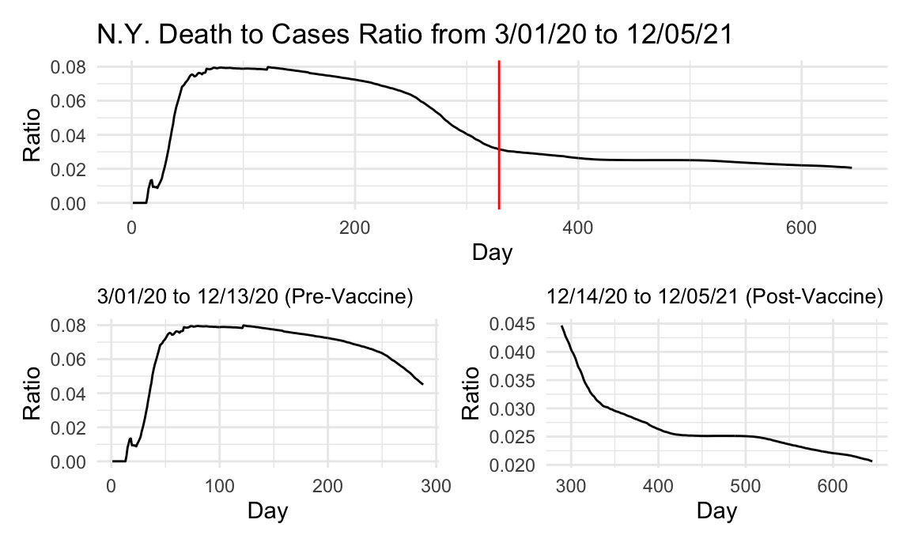
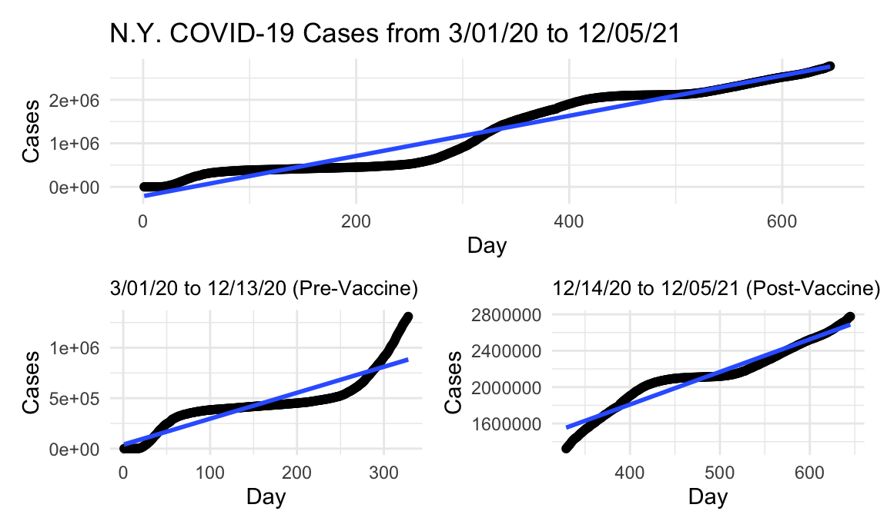
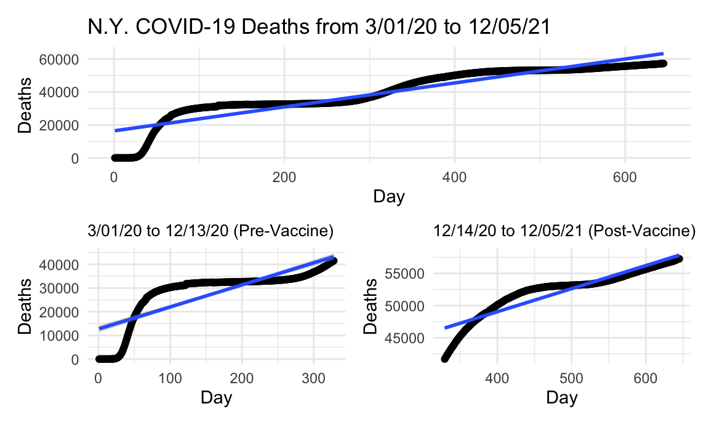

library(tidyverse)
library(patchwork)
library(plotly)
knitr::opts_chunk$set(
fig.width = 6,
fig.asp = .6,
out.width = "90%"
)
theme_set(theme_minimal() + theme(legend.position = "bottom"))
options(
ggplot2.continuous.colour = "viridis",
ggplot2.continuous.fill = "viridis"
)
scale_colour_discrete = scale_colour_viridis_d
scale_fill_discrete = scale_fill_viridis_dny_covid =
read_csv("./data/us-states.csv") %>%
filter(state == "New York") %>%
mutate(day = 1:645,
dc_ratio = deaths/cases,
new_cases = cases - lag(cases, default = first(cases)),
new_deaths = deaths - lag(deaths, default = first(deaths))) %>%
select(-fips)In order to investigate the effect that vaccine release had on the trajectory of the pandemic, we first had to separate our data into pre-vaccine and post-vaccine dates. The date 12/14/20 was used as the date when vaccines became available in the U.S. Date was converted to “day of pandemic” in order to fit a line of best fit on a numeric variable instead of YYYY-MM-DD date format. The data from NY Times consisted of cumulative case and death counts, and from this we first looked at the death to case ratio curve overall, then separated into pre- and post-vaccine availability to see whether the presence of a vaccine changed the death/case ratio. Below is a look at that data for the the state of New York specifically.
total_ratio_p =
ny_covid %>%
ggplot(aes(x = day, y = dc_ratio)) +
geom_line() +
labs(title = "N.Y. Death to Cases Ratio from 3/01/20 to 12/05/21",
x = "Day", y = "Ratio") +
geom_vline(xintercept = 329, linetype="solid",
color = "red", size=0.5)
pre_vacc_ratio_p =
ny_covid %>%
slice(1:288) %>%
ggplot(aes(x = day, y = dc_ratio)) +
geom_line() +
labs(title = "3/01/20 to 12/13/20 (Pre-Vaccine)",
x = "Day", y = "Ratio") +
theme(plot.title = element_text(size=10))
post_vacc_ratio_p =
ny_covid %>%
slice(289:645) %>%
ggplot(aes(x = day, y = dc_ratio)) +
geom_line() +
labs(title = "12/14/20 to 12/05/21 (Post-Vaccine)",
x = "Day", y = "Ratio") +
theme(plot.title = element_text(size=10))
total_ratio_p / (pre_vacc_ratio_p + post_vacc_ratio_p)
The cases and deaths in New York state do not seem to occur until March, which is delayed by over a month from the rest of the United States data. As such, there is no spike at the very beginning, but there is a large increase from 0 to 8 percent in the death to case ratio. Again, this is likely due to lack of any unifying knowledge about the virus or the pandemic, allowing it to spread freely. At this point in time, it was just beginning to be understood what in fact was going on. More drastically than the whole U.S. data though, around the winter-time when cases were spiking and at an all time high, the death to case ratio was dropping in New York state, and continued to drop after the availability of a vaccine. Although vaccine uptake was obviously not 100% in NY, it was better than the national average, and as such caused the ratio to continue to drop, as it was not confounded by states with poor vaccine uptake like the United States data. We can see from the post-vaccine ratio curve that after the vaccine was released, the death to case ratio continued to drop to the present and never experienced a second upward trend. This reduction in deaths from COVID cases may well be attributed to the effects of the vaccine and its availability.
ny_newcase =
ny_covid %>%
ggplot(aes(x = date, y = new_cases)) +
# geom_point() +
geom_path() +
labs(title = "New COVID Cases and Deaths (Plotly)", x = "Date", y = "New Cases")
ggply_ny_newcase = ggplotly(ny_newcase)
ny_newdeath =
ny_covid %>%
ggplot(aes(x = date, y = new_deaths)) +
# geom_point() +
geom_path() +
labs(x = "Date", y = "New Deaths")
ggply_ny_newdeath = ggplotly(ny_newdeath)
subplot(ggply_ny_newcase, ggply_ny_newdeath,
nrows = 2, shareX = TRUE, titleY = TRUE, titleX = TRUE, margin = 0.1)Although in New York state the cases and deaths continuted to rise through the winter immediately after vaccine availability (presumably because it did not become widely available until late winter/early spring), we can see that unlike the rest of the United States, cases and deaths never regained quite the footing and numbers they had prior to vaccine availability. Our vaccination uptake data can corroborate the fact that New York may have had a higher rate of vaccination than the United States as a whole, and we can see the possible effects of that higher rate of vaccination in the big drop in new cases and even bigger drop in new deaths after New Yorkers across the state became vaccinated in large numbers.
total_ny_case_lm =
lm(cases ~ day, data = ny_covid) %>%
broom::tidy()
total_ny_case_p =
ny_covid %>%
ggplot(aes(x = day, y = cases)) +
geom_point() +
geom_smooth(method = "lm", formula = y ~ x) +
labs(title = "N.Y. COVID-19 Cases from 3/01/20 to 12/05/21",
x = "Day", y = "Cases")
pre_vacc_case_lm =
ny_covid %>%
slice(1:328) %>%
lm(cases ~ day, data = .) %>%
broom::tidy()
pre_vacc_case_p =
ny_covid %>%
slice(1:328) %>%
ggplot(aes(x = day, y = cases)) +
geom_point() +
geom_smooth(method = "lm", formula = y ~ x) +
labs(title = "3/01/20 to 12/13/20 (Pre-Vaccine)",
x = "Day", y = "Cases") +
theme(plot.title = element_text(size=10))
post_vacc_case_lm =
ny_covid %>%
slice(329:663) %>%
lm(cases ~ day, data = .) %>%
broom::tidy()
post_vacc_case_p =
ny_covid %>%
slice(329:663) %>%
ggplot(aes(x = day, y = cases)) +
geom_point() +
geom_smooth(method = "lm", formula = y ~ x) +
labs(title = "12/14/20 to 12/05/21 (Post-Vaccine)",
x = "Day", y = "Cases") +
theme(plot.title = element_text(size=10))
total_ny_case_p / (pre_vacc_case_p + post_vacc_case_p)
As with the United States data, looking at the slops for the lines of best fit for cases, we can see that the rate of cases did continue even after the vaccine’s availability. Whether this is because of poor vaccine uptake or effectiveness will be investigated in the vaccination data pages, but the post-vaccination to pre-vaccination case ratio is significantly less in New York state than in the United States at large (1.39 vs 1.77) indicating that New York state fared better than the U.S. as a whole when it came to the rate of cases after the vaccine’s availability. Again, whether this difference is due to differences in vaccine uptake will be investigated. Visually however, the spike of cases seen during the winter season, around when the vaccine was first released, did not seem to replicate itself after its availability in the state of New York. Again, whether that was due to the vaccine’s availability itself, seasonal factors, or others is a matter of conjecture and debate.
total_ny_death_lm =
lm(deaths ~ day, data = ny_covid) %>%
broom::tidy()
total_ny_death_p =
ny_covid %>%
ggplot(aes(x = day, y = deaths)) +
geom_point() +
geom_smooth(method = "lm", formula = y ~ x) +
labs(title = "N.Y. COVID-19 Deaths from 3/01/20 to 12/05/21",
x = "Day", y = "Deaths")
pre_vacc_death_lm =
ny_covid %>%
slice(1:328) %>%
lm(deaths ~ day, data = .) %>%
broom::tidy()
pre_vacc_death_p =
ny_covid %>%
slice(1:328) %>%
ggplot(aes(x = day, y = deaths)) +
geom_point() +
geom_smooth(method = "lm", formula = y ~ x) +
labs(title = "3/01/20 to 12/13/20 (Pre-Vaccine)",
x = "Day", y = "Deaths") +
theme(plot.title = element_text(size=10))
post_vacc_death_lm =
ny_covid %>%
slice(329:663) %>%
lm(deaths ~ day, data = .) %>%
broom::tidy()
post_vacc_death_p =
ny_covid %>%
slice(329:663) %>%
ggplot(aes(x = day, y = deaths)) +
geom_point() +
geom_smooth(method = "lm", formula = y ~ x) +
labs(title = "12/14/20 to 12/05/21 (Post-Vaccine)",
x = "Day", y = "Deaths") +
theme(plot.title = element_text(size=10))
total_ny_death_p / (pre_vacc_death_p + post_vacc_death_p)
One thing that can be relayed from the plots of deaths and death rate in New York state is that the vaccine’s availability did reduce the slope of the line of best fit, and therefore the reduction in COVID deaths post-vaccine release mat be attributable to the vaccine itself. Unlike the United States data, which was likely confounded by states with poor vaccine uptake and high vaccine hesitancy, New York state saw a drop in the amount of cases per day after the vaccine became available, according to the slops of these lines of fit. We will attempt to corroborate this finding with vaccine uptake data by state in the coming pages. Again, comparing the ratio of post-vaccine deaths to pre-vaccine deaths from New York to the United States as a whole, we see that in NY this ratio is 0.39 vs 1.14. This means that New York states experienced 39% the amount of deaths after the vaccine became available, or a 61% drop in deaths from COVID as opposed to the United States at large, which experienced 114% the deaths from COVID after the vaccine was relased. Essentially, even with a vaccine available to the population, deaths increased by 14% across the United States due to COVID. We’ll see if a disparity in vaccine uptake between New York and the rest of the country is the reason for this big difference.
tibble(
metric = c("intercept", "slope"),
total_case = pull(total_ny_case_lm, estimate),
pre_vacc_case = pull(pre_vacc_case_lm, estimate),
post_vacc_case = pull(post_vacc_case_lm, estimate),
total_death = pull(total_ny_death_lm, estimate),
pre_vacc_death = pull(pre_vacc_death_lm, estimate),
post_vacc_death = pull(post_vacc_death_lm, estimate)) %>%
knitr::kable()| metric | total_case | pre_vacc_case | post_vacc_case | total_death | pre_vacc_death | post_vacc_death |
|---|---|---|---|---|---|---|
| intercept | -214418.736 | 39249.724 | 374906.914 | 16427.94131 | 12714.76779 | 34727.1980 |
| slope | 4618.628 | 2573.132 | 3584.467 | 72.63666 | 93.04059 | 35.8191 |
N.Y. State Post-vax/Pre-vax Case Ratio: 1.3930364 \(\\\) N.Y. State Post-vax/Pre-vax Death Ratio: 0.3849835